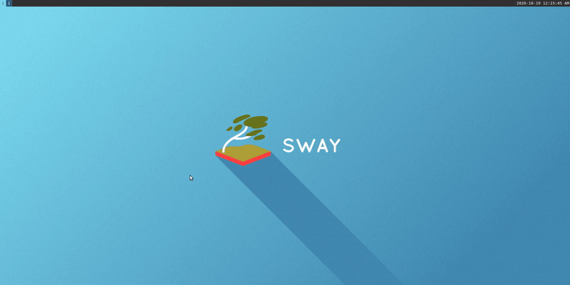

Simple Install
Install wlroots and sway from source.
Introduction
In this section we are going to build wlroots (required to build sway) and sway from the source repository.
We will be building the latest stable version that seems to be supported by the dependecies in ubuntu 20.04: Sway 1.5.1
Build wlroots
Here we will be building and installing wlroots.
Dependencies
Start by installing the essentials tools, we will be using pip to install an updated version of meson.
sudo apt install build-essential
sudo apt install git
sudo apt install python3-pip
Meson
wlroots requires a more up to date version of meson from what ubuntu provides, we will be using pip to install an updated one.
pip3 install --user meson==0.55.3
We now need this to be available under PATH:
export PATH=$HOME/.local/bin:$PATH
Add the line at the end of your .bashrc in your home and source it:
source ~/.bashrc
Next are direct dependencies of wlroots:
sudo apt install wayland-protocols \
libwayland-dev \
libegl1-mesa-dev \
libgles2-mesa-dev \
libdrm-dev \
libgbm-dev \
libinput-dev \
libxkbcommon-dev \
libgudev-1.0-dev \
libpixman-1-dev \
libsystemd-dev \
cmake \
libpng-dev \
libavutil-dev \
libavcodec-dev \
libavformat-dev \
ninja-build \
meson
The next ones are optional dependencies for x11 support, not required if you want a full wayland installation.
If you don't know exactly why you don't need them, I highly encourage you to install them:
sudo apt install libxcb-composite0-dev \
libxcb-icccm4-dev \
libxcb-image0-dev \
libxcb-render0-dev \
libxcb-xfixes0-dev \
libxkbcommon-dev \
libxcb-xinput-dev \
libx11-xcb-dev
Build & Install
Now we will be cloning, building and installing wlroots.
Clone the repo
You can choose the path you prefer for the following steps, I will be working in ~/sway-build.
mkdir ~/sway-build
cd ~/sway-build
git clone https://github.com/swaywm/wlroots.git
cd wlroots
git checkout 0.12.0
Build wlroots
# ~/sway-build/wlroots
meson build
ninja -C build
Install wlroots
# ~/sway-build/wlroots
sudo ninja -C build install
And that's it, with this you have successfully installed wlroots.
Build Sway
Here we will be building and installing Sway.
Dependencies
The list of what we need now is smaller:
sudo apt install libjson-c-dev \
libpango1.0-dev \
libcairo2-dev \
libgdk-pixbuf2.0-dev \
scdoc
Build & Install
Now we will be cloning, building and installing sway.
Clone the repo
We will be using the path created in the wlroots steps:
# ~/sway-build
git clone https://github.com/swaywm/sway.git
cd sway
git checkout 1.5.1
Build sway
# ~/sway-build/sway
meson build
ninja -C build
Install sway
# ~/sway-build/sway
sudo ninja -C build install
That's it you just installed Sway! 🎉
Sanity Checks & Post Install
Desktop File
You should have this file /usr/local/share/wayland-sessions/sway.desktop with these contents:
[Desktop Entry]
Name=Sway
Comment=An i3-compatible Wayland compositor
Exec=sway
Type=Application
This file is what allows the login manager to select the environment Sway to start at login.
A neat trick is that you can Exec a custom script that sets some environment variables or does something else before starting sway, but we will see other ways to set these variables in further parts of the guide.
Config File
You can copy the default sway config from /usr/local/etc/sway/config to ~/.config/sway/config:
mkdir ~/.config/sway
cp /usr/local/etc/sway/config ~/.config/sway
This is the file you will be modifying to customize the sway behaviour and keybinds.
note: if you have an i3 config, you can copy that in the same path as above instead of the default one and it should work.
Final dependencies
Whaaat ?? More dependencies ???
Bear with me, the default config expects some programs for some of its configuration, they can be changed but to make it work let's just install them and later we will see replacements.
The missing deps are:
- dmenu: default menu when using
<mod>+d - swaybg: allows sway to handle background images
- swayidle: allows sway to handle idle functionality
- swaylock: locks the screen
- alacritty: default terminal emulator in sway
You can install them with:
sudo apt install dmenu
sudo apt install swaybg
sudo apt install swayidle
sudo apt install swaylock
For alacritty, please see the alacritty optional section below before trying sway.
Idle behaviour
You might want to uncomment this exec from the default config to have the idle behaviour you expect of screen locking and screen turn off:
### Idle configuration
#
# Example configuration:
#
# exec swayidle -w \
# timeout 300 'swaylock -f -c 000000' \
# timeout 600 'swaymsg "output * dpms off"' resume 'swaymsg "output * dpms on"' \
# before-sleep 'swaylock -f -c 000000'
#
# This will lock your screen after 300 seconds of inactivity, then turn off
# your displays after another 300 seconds, and turn your screens back on when
# resumed. It will also lock your screen before your computer goes to sleep.
In a later section of the guide we will see how to have a custom behaviour to blur the screen on lock, a totally useless thing but definitely neat.
Start Sway
Now we can finally start sway!
Logout and in the bottom right widget on login select Sway and proceed to login:

You will be greeted by a pretty empty but clean virtual desktop:

To exit Sway you can press the keys <mod>+shift+e that will bring up a popup where you will have to click with the mouse to confirm:

Now you can experiment with Sway to see if it fits your workflow, with the default config you can use these commands to open a new terminal and close windows:
<mod>+enter- Open a new terminal<mod>+shift+q- Close window<mod>+d- Open dmenu

Great! This concludes the simple install of Sway, if you are interested in some tools and configurations that I find useful for my day to day work, check the Extra section!
I hope you will enjoy this new workflow as much as I do, and if you do not, you learned something new today!
Alacritty (Optional)
The default terminal in the Sway config is Alacritty.
Install
To get an up to date version on Ubuntu you can use the following ppa:
sudo add-apt-repository ppa:mmstick76/alacritty
sudo apt update
sudo apt install alacritty
Change default terminal
You don't have to use it and you can change the default by changing this line in the Sway config:
# Your preferred terminal emulator
set $term alacritty
for example to use gnome-terminal:
# Your preferred terminal emulator
set $term gnome-terminal
Why I use it
My personal reason for using alacritty is that I was looking for a minimal terminal to pair with Sway and it supports vi keybinds.